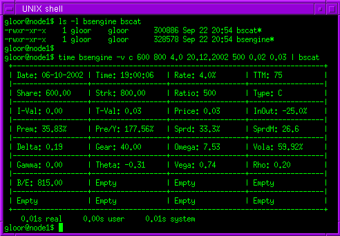

Abstract
Bsengine computes the fair value of european style options based on
the current stock price. Aditionally, several computations are given;
greeks, spread, breakeven, Omega, Gear, Rho. It uses the option pricing
algorithm of Black, F. and Scholes, M, the architects of the
option pricing model. The software was written in C on a SUN
workstation, its primary design was to run as a backoffice processor.
The code itself was optimized for running under the Linux operating
system. However, the author has built this software successfully on
Windoze, but just for testing purposes and not for productional use
because of well known operating system deficits.
Design goal
Initial reason that I wrote this software was my personal requirement that I needed a software which should be able to receive data from a stock exchange server which can be used for recruiting warrants considering my personal and individual risk profile. An additional design goal was that the system should be independent of slow represented online banking websites containing advertisements and other crap. Third and most important reason for writing the software was the cognition of finding inconsistent product informations and miscalculations on the website from my broker. I don't really trust these kind of online banking systems currently around. Investing my money trusting my own calculations is the way I like. Bsengine was typically designed for industrial processing of batch data e.g. to compute and populate a broker website automatically (e.g. similar like Swissquote or Consors sites). The bsengine kernel includes a plain CLI interface and the system was designed to be modular and fast. An advantage of this concept is that the software can be used unattended as a part of a huge batch processing concept. If you like to hack a Gtk+ frontend around the kernel, fell free!
Postprocessing notes
Once the mathematical calculation based on a complex derivative option
pricing model has been finished, bsengine will write its results to
stdout(), normally to a computer screen. The standard output method of
bsengine is a token separated data-string which can easily be parsed
from a productional batch processing subprocess. Using this facility,
the token separated string given from bsengine is loaded in to a
relational database management backend system (RDBMS) for further post
processing of the data (e.g. a mySQL
database server). I wrote an additional application called bscat
(bsengine catalog) which reads bsengine's output from stdout via Unix
pipe into stdin and prepares a new output in a human readable format (a
shown in screenshot above).
Technical notes
The bsengine kernel and bscat was fully written in C and should be
easily portable to other Unix environments or operating systems which
supports pipes. I developped the software on a SUN Sparc 5 running
GNU/Linux. To compute the implied volatility, a fast approximation
formula was required. I use the "Newton-Raphson" algorithm to
numerically determing the volatility of an option using the generalized
Black-Scholes model, given its market price. The "Manaster and Koehler"
algorithm is responsible for the initial value used for iterations, this
is the main reason, that bsengine is very fast computing option prices.
Bsengine was tested hours and hours by feeding in real time data from a
trading system. This software is ready for productional use, please note
that the bsengine package was published under the terms of the GNU General Public License which
clearly implies, that this software comes without any warranty.
Future plans and additional feautures
Basically, no software is finished and bsengine is a release of my
development source tree of bsengine, in other words it's a WIP (work in
progress) snapshot. I plan to expand the capabilites of bsengine as soon
I get access to a free or favourable stock exchange interface. To find
an adequate offer is a real problem and this is the main reason why
further development of besengine has been terminated. Computing option
prices has to be in real-time. However, current status of bsengine is
that the software is fast and well working. If you have any suggestions,
comments or contributions, feel free to get in touch with me by sending
me an email.
Examples of bsengine and bscat in action
gloor@node1$ ./bsengine -h
bsengine 1.0.0 - Black/Scholes Option pricing (UNIX)
written by Marc O. Gloor <marc_dot_gloor_at_u_dot_nus_dot_edu>
usage : bsengine [options] [arguments]
example: bsengine -v c 6024.2 8000 4.0 20.10.2002 500 0.02
0.03
options are:
-h show
help
-v compute priced volatility
-r show
release
-p compute fair price
-v arguments are (in correct order): -p
arguments are (in correct order):
-1st Call/Put flag
[c/p]
-1st Call/Put flag [c/p]
-2nd Underlying price
[dec]
-2nd Underlying price [dec]
-3rd Strike price
[dec]
-3rd Strike price [dec]
-4th Interest Rate in %
[dec] -4th
Interest Rate in % [dec]
-5th T.t. Maturity
[dd.mm.yyyy] -5th T.t.
Maturity [dd.mm.yyyy]
-6th Options ratio
[dec]
-6th Options ratio [dec]
-7th Bid price
[dec]
-7th Given volatility in % [dec]
-8th Ask price [dec]
For productional environments, for example you intend to populate a
relational database using following command:
gloor@node1$ ./bsengine -v c 6024.2 8000 4.0 20.10.2002 500 0.02
0.02
Here is an example of the semicolon separated data output:
22-09-2002;20:08:12;C;6024.20;8000.00;500;28;4.0%;0.03;55.63%;-24.7%;...
Here is an example of the bsengine and bscat working together (e.g. assembling a website using a CGI script):
gloor@node1$ bsengine -v c 6024.2 8000 4.0 20.10.2002 500 0.02
0.03 | bscat
+---------------------------------------------------------------------------+
| Date: 22-09-2002 | Time: 20:09:08 | Rate:
4.0% | TTM:
28 |
|------------------+------------------+------------------+------------------|
| Share: 6024.20 | Strk:
8000.00 | Ratio:
500 | Type:
C |
|------------------+------------------+------------------+------------------|
| I-Val: 0.00 | T-Val:
0.03 | Price:
0.03 | InOut: -24.7% |
|------------------+------------------+------------------+------------------|
| Prem: 33.05% | Pre/Y:
1179.91% | Sprd: 33.3% | SprdM:
119.8 |
|------------------+------------------+------------------+------------------|
| Delta: 0.04 | Gear:
401.61 | Omega: 16.77 |
Vola: 55.63% |
|------------------+------------------+------------------+------------------|
| Gamma: 0.00 | Theta:
-1.52 | Vega:
1.50 | Rho:
0.18 |
|------------------+------------------+------------------+------------------|
| B/E: 8015.00 |
Empty
|
Empty
|
Empty |
|------------------+------------------+------------------+------------------|
|
Empty
|
Empty
|
Empty
|
Empty |
+---------------------------------------------------------------------------+
Data field description
Date: timestamp
date
Pre/Y: premium per annum
Time: timestamp
time
Sprd: spread
Rate: interest
rate
SprdM: spread Move
TTM: time to
maturity
Delta: delta
Share: share
price
Gear: gearing
Strk: options strike
price Omega: omega
Ratio: options
ratio
Vola: implied volatility
Type: type
(Call/Put)
Gamma: gamma
I-Val: internal
value
Theta: theta
T-Val: time
value
Vega: vega
Price: Options faire
price Rho: rho
InOut: In/Out of the
money B/E: break
even
Prem: premium
Benchmark
The result of a computing simulation of 20'000 options prices was
displayed in seconds, higher performance depends on the current workload
and of your hardware. Binary was optimized for Linux (stripped code).
License
The distribution is licensed under the GNU General Public License.
Download the latest release
Currently no documentation and sourcecode available (send me an
email), please read the description above before running bsengine.
Bsengine 1.0.0, statically linked binary only version for linux: bsengine-1.0.0_stat_bin.tar.gz
[.tgz, 262kb].
If you need any further assistance, let me know.
$Id: bsengine.html,v 1.20 2020/11/21 11:13:30 gloor Exp gloor $ |